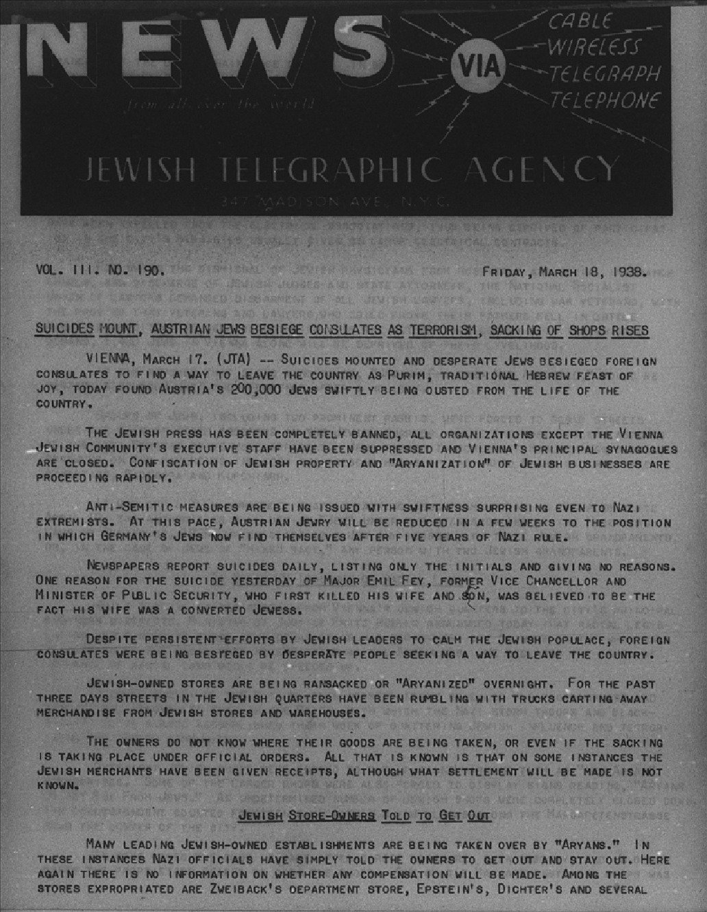
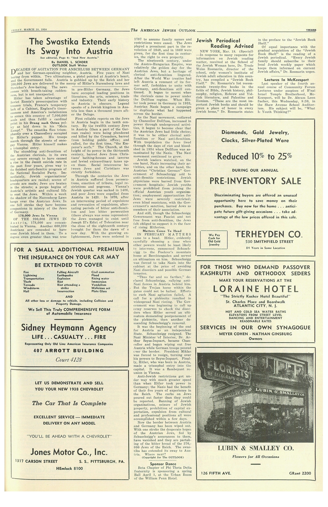
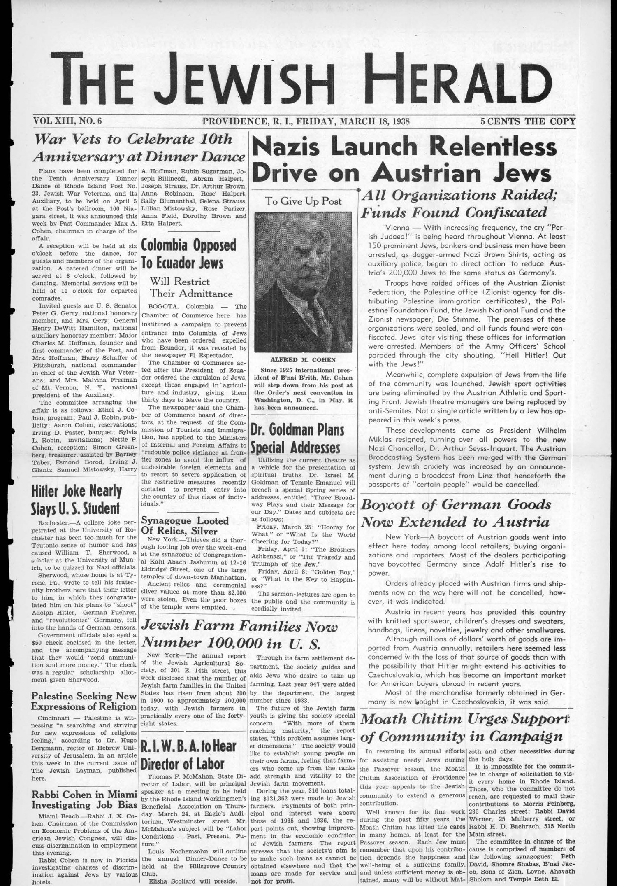
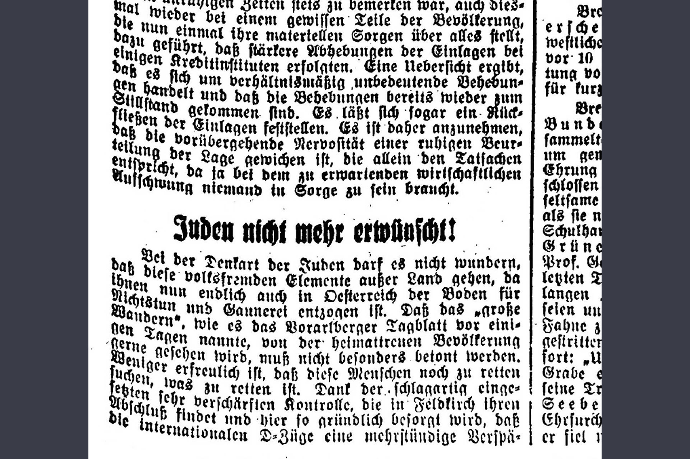
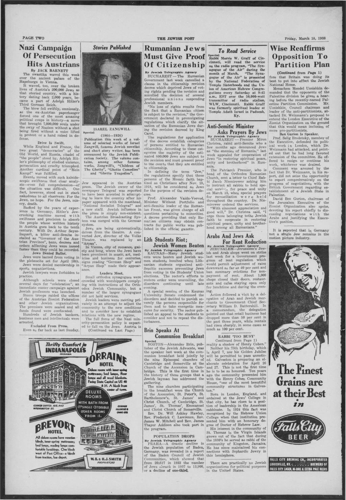
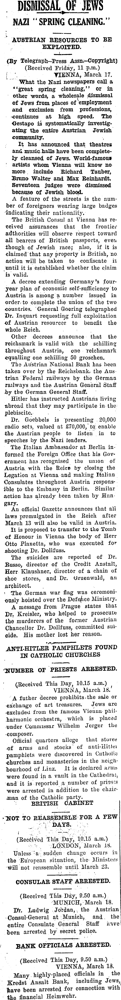

HN HN-510 · March 18, 1938 · War, Conflict & Security > War Crimes, Massacres & Genocide > Systematic persecution
Source: Jewish Post, p. 2 — original page; USHMM, 1938 key dates.
Report: “Nazi Campaign of Persecution Hits Austrians†described the impact of the Anschluss on Austria's roughly 200,000 Jews, framing annexation as an immediate human crisis rather than merely a change on a European map.
Assessment: Germany annexed Austria in March 1938, followed by intense anti-Jewish humiliation, dispossession, and persecution. The article's round population figure is a contemporary approximation, not an independently verified count of all people harmed. Its description of a bloodless territorial takeover does not mean persecution was nonviolent.
Identity-review candidate peers: HN-503:Algorithmic
Authentic images retrieved from Jewish Telegraphic Agency Archive, Carnegie Mellon University Libraries (The American Jewish Outlook), Rhode Island Jewish Historical Association, Crossing the Border exhibit (Austrian National Library scan of the Vorarlberger Tagblatt), Hoosier State Chronicles (Indiana State Library) and Papers Past (National Library of New Zealand). Article crops are located using the archive's own OCR word coordinates and rendered at native crop resolution; article clips are assembled from the archive's own article-block images; page images marked "archive tiles" are stitched from the archive's own tiled page service at its 256-px tile cap; page images marked "issue PDF" are single pages rasterised from the archive's own issue PDF, with the page chosen by matching the headline against the PDF's text layer; page scans are reduced-size access renditions. No images were generated, mocked, or retouched.






Not yet acquired. Queued for provider-specific acquisition testing (see source-acquisition manifest).
URL (preserved verbatim): https://newspapers.library.in.gov/?a=d&d=JPOST19380318-01.1.2
Saved research report: Historical_Newspaper_Event_Research_503-527_2026-10-23.md
Evidence note: A newspaper report means a historical publication made a claim; it does not establish that claim as fact. Contemporary reporting is separated from later scholarly context and our own assessment.